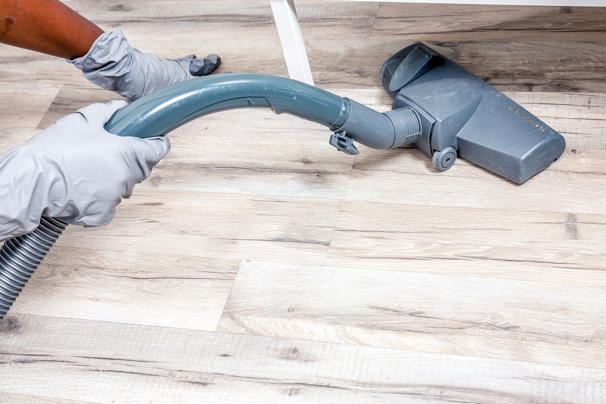

Nossos Serviços
Limpeza Comercial
Manter o ambiente de trabalho limpo e organizado não é apenas uma questão de estética, mas um investimento estratégico para o sucesso do seu negócio. Contratar um serviço especializado de limpeza comercial vai muito além da simples faxina
- Ambiente Saudável para Seus Colaboradores: Um local de trabalho limpo contribui diretamente para a saúde e o bem-estar dos seus funcionários.
- Aumento da Produtividade: Um ambiente limpo e organizado favorece o foco e a produtividade.
- Impressão Profissional para Seus Clientes: A primeira impressão é sempre a que fica!
- Economia de Tempo e Recursos: Contratar uma empresa especializada em limpeza comercial permite que você e sua equipe foquem no core business da sua empresa.
- Preservação do Seu Patrimônio: Manter um ambiente limpo ajuda a prolongar a vida útil do mobiliário, equipamentos e infraestrutura da empresa

Limpeza Pós-Obra
Após uma reforma ou construção, o local pode ficar repleto de resíduos, poeira e sujeira de difícil remoção. A limpeza pós-obra vai muito além da faxina convencional, exigindo equipamentos especializados, produtos adequados e uma equipe treinada para lidar com os desafios desse tipo de serviço.
- Resultados Impecáveis e Imediatos: A limpeza pós-obra é uma tarefa complexa que exige mais do que simples varrição ou lavagem de pisos.
- Economiza Tempo e Esforço: A limpeza pós-obra é uma tarefa que demanda tempo e esforço. Se você tentar fazer isso por conta própria, pode gastar dias tentando limpar resíduos e poeira
- Melhoria na Imagem e Apresentação do Espaço: Seja para sua casa, escritório ou estabelecimento comercial, a limpeza pós-obra é essencial para garantir uma boa impressão.
- Redução do Stress e Preocupações: Após uma obra, o último desafio é lidar com a sujeira e os resíduos. Contratar uma empresa especializada em limpeza pós-obra elimina essa preocupação
- Acesso a Equipamentos e Produtos Específicos: A limpeza de pós-obra exige equipamentos especializados que nem sempre estão disponíveis em uma limpeza convencional.

Portaria
O serviço de portaria vai muito além da simples função de recepção. Ele desempenha um papel fundamental na segurança, organização e imagem do seu negócio ou condomínio.
- Redução de Custos: Uma das principais razões para terceirizar o serviço de portaria é a redução de custos operacionais.
- Profissionais Qualificados: A terceirização permite que a empresa ou condomínio conte com profissionais treinados e qualificados, que sabem lidar com diferentes situações de trabalho.
- Disponibilidade 24/7: Muitas empresas de portaria oferecem serviços 24 horas por dia, incluindo finais de semana e feriados.
- Melhoria no Atendimento ao Cliente ou Morador: A presença de uma portaria bem treinada melhora o atendimento a visitantes, moradores ou funcionários.
- Comodidade e Conforto para Moradores e Funcionários: A presença de uma portaria proporciona comodidade e conforto aos moradores e funcionários.
 WhatsApp
WhatsApp
 Instagram
Instagram
 E-mail
E-mail